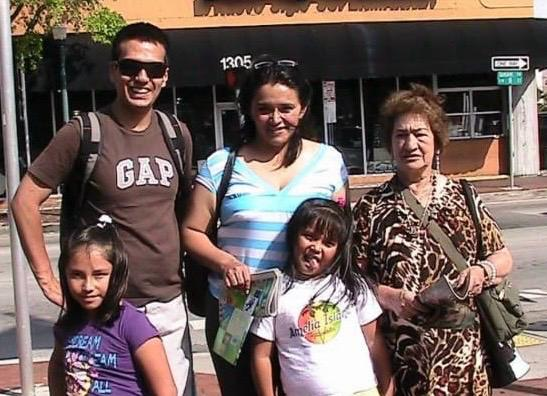
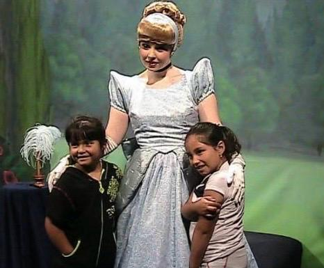
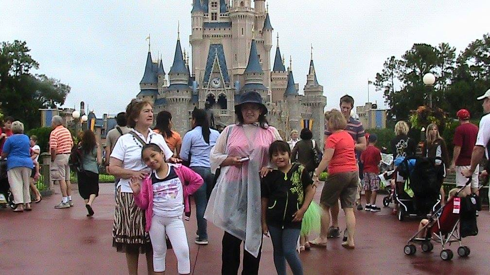
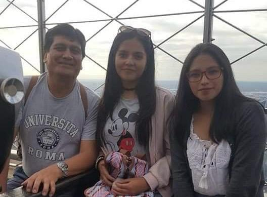
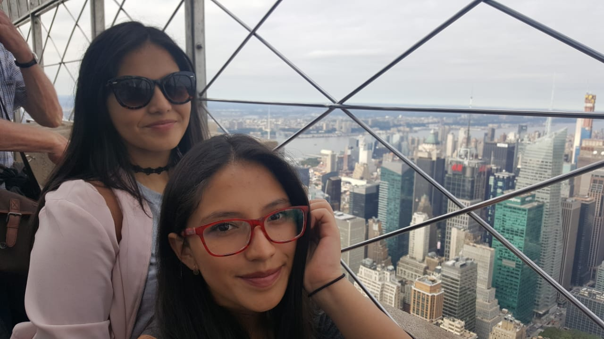
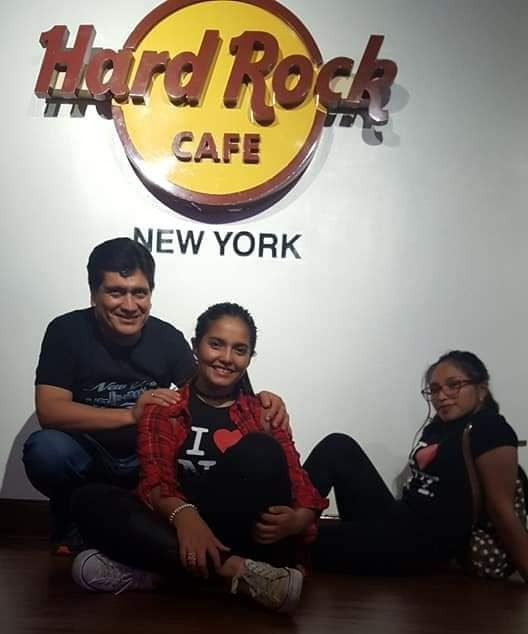
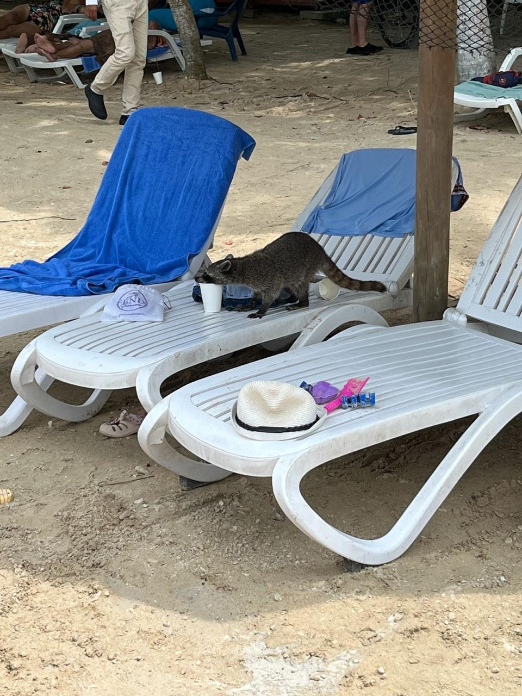
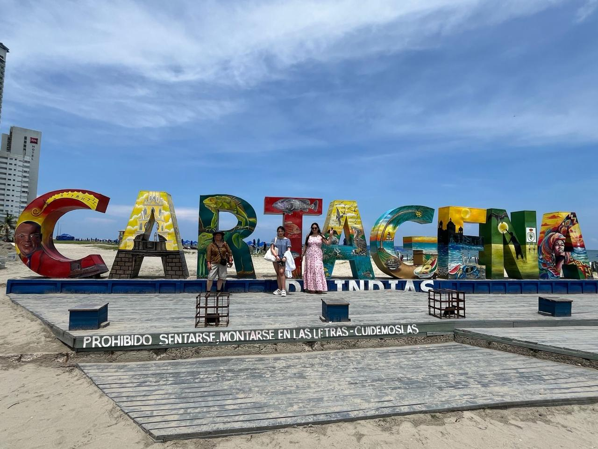
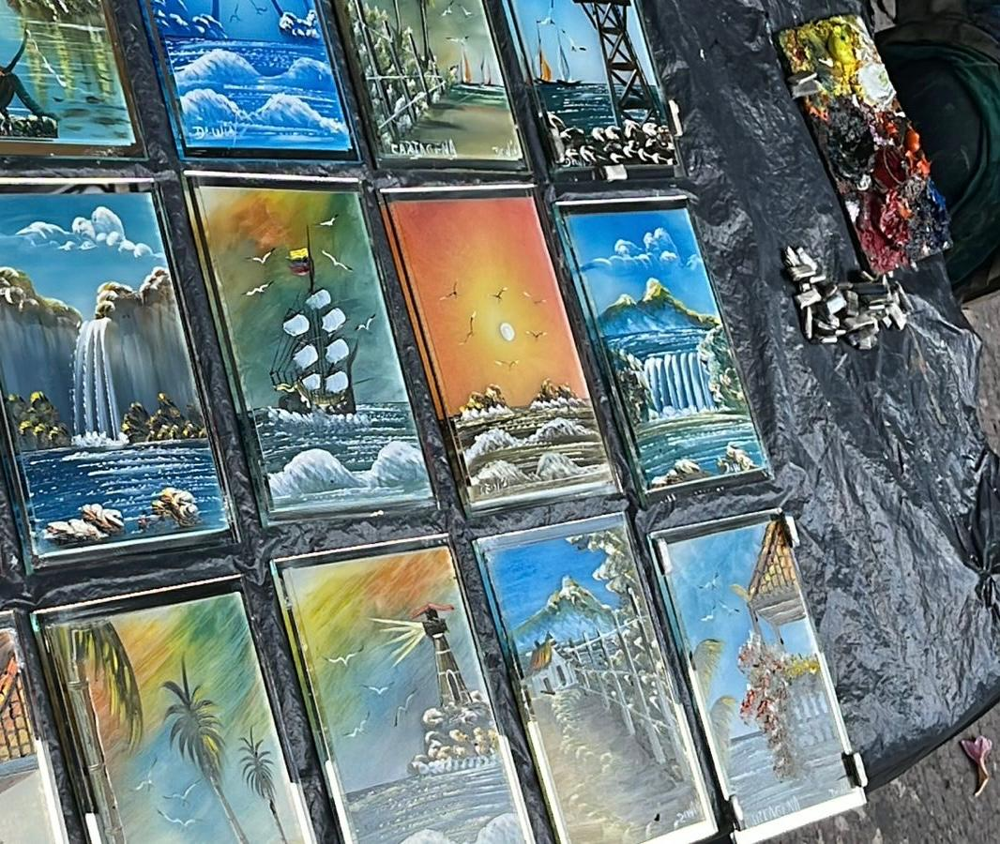

MIS VIAJES
Orlando & Miami, USA (2011)



Fui a Miami y Orlando en el año 2011 cuando tenía 6 años. Viajé junto a mis papás, mi hermana y mi abuelita. Recuerdo que conocí los parques de Disney y pude ver a muchos personajes que antes solo había visto en la televisión, como las princesas de Disney. Fue un viaje muy mágico y especial para mí, especialmente porque era una niña pequeña viviendo algo que parecía un sueño.
New York City, USA (2018)



A los 12 años viajé a New York City y además celebré mi cumpleaños ahí. Me encantó conocer la ciudad y visitar lugares icónicos como el Empire State, Times Square, los puentes y el metro. También me impresionó ver personas de tantos lugares diferentes, cada una con historias distintas, compartiendo una misma ciudad tan grande y llena de vida.
Cartagena, Colombia (2024)



En el 2024, mi tía Fabiolita nos llevó a mi hermana y a mí a Cartagena, Colombia. Fue un viaje hermoso donde pude ver de cerca cultura colombiana, conociendo lugares tan impresionantes como las Murallas de Cartagena y el pintoresco centro histórico. Me fascinó recorrer sus calles llenas de color, historia y magia, descubriendo la esencia de una ciudad que se siente tan viva en cada esquina.